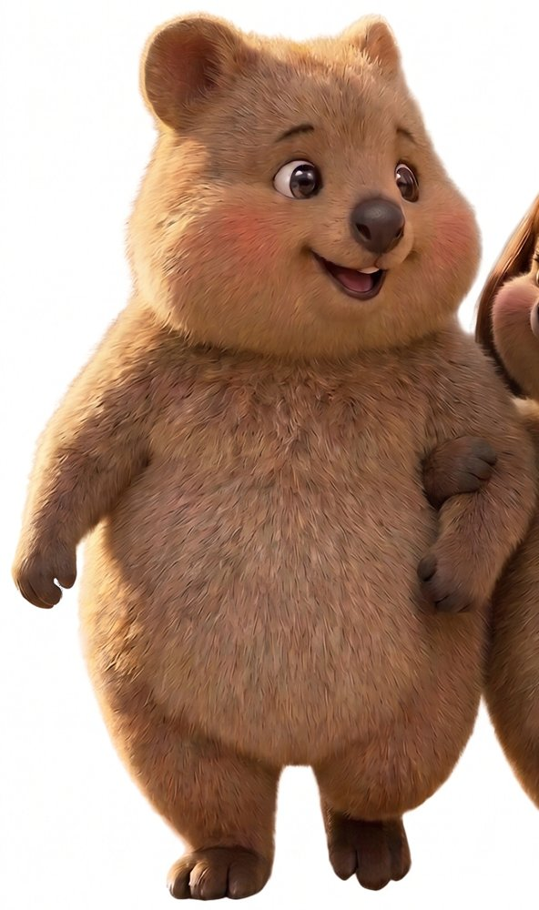
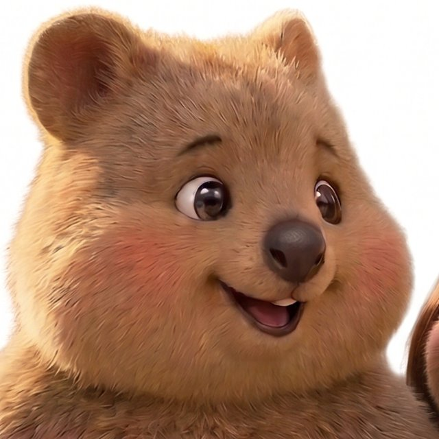
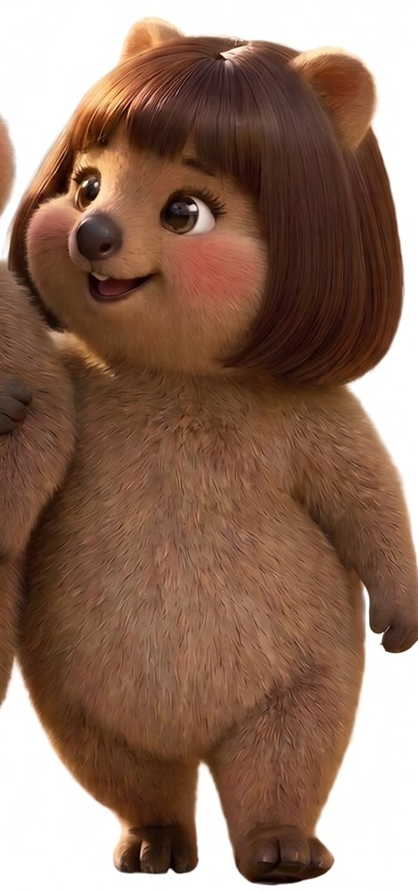
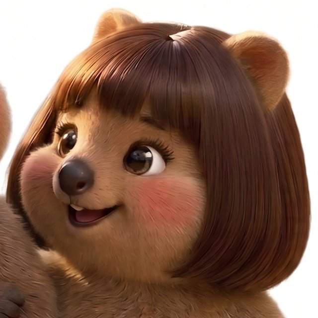
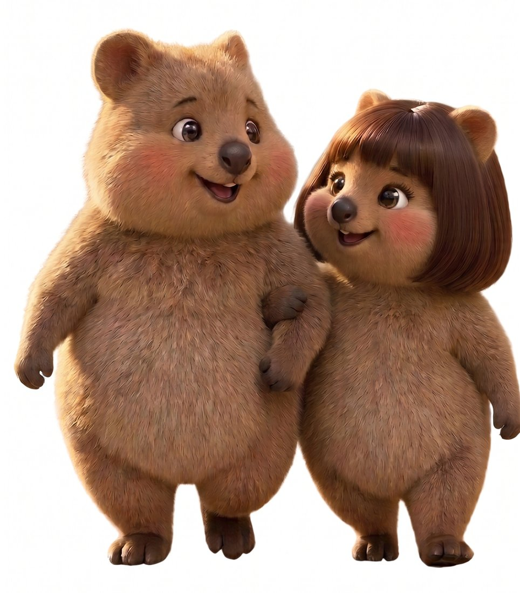

늘 웃는 통통한 쿼카 두 마리의 일상. 왼쪽이 뽀돌이, 오른쪽이 뽀순이입니다.


Ppodol, a chubby male quokka character in semi-realistic 3D animation style: tall and very round body, fluffy warm brown fur with a slightly lighter belly, small round ears, big glossy brown eyes, dark brown nose, soft pink blush on both cheeks, open friendly smile showing two small front teeth, dark brown paws and feet, no clothes.
Using the attached image as the character reference, create an expression sheet of Ppodol (the taller quokka on the left) only: neutral, talking, big laugh, eating a leaf, heart eyes, sulking, angry, surprised, crying, sleepy. Same fur, same proportions, plain white background.


Pposun, a chubby female quokka character in semi-realistic 3D animation style: shorter than Ppodol, round body, fluffy warm brown fur, glossy brown bob haircut with straight bangs, small round ears showing above the hair, big brown eyes with long eyelashes, dark brown nose, soft pink blush on both cheeks, gentle smile showing two small front teeth, dark brown paws and feet, no clothes.
Using the attached image as the character reference, create an expression sheet of Pposun (the shorter quokka with the bob haircut on the right) only: neutral, talking, big laugh, eating a leaf, heart eyes, sulking, angry, surprised, crying, sleepy. Same fur, same hair, same proportions, plain white background.

표정별 이미지는 아직 없습니다. 위의 "표정 시트 만들기" 문장으로 이미지를 뽑으면 이 시트에 추가할 수 있습니다.